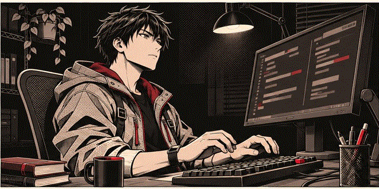
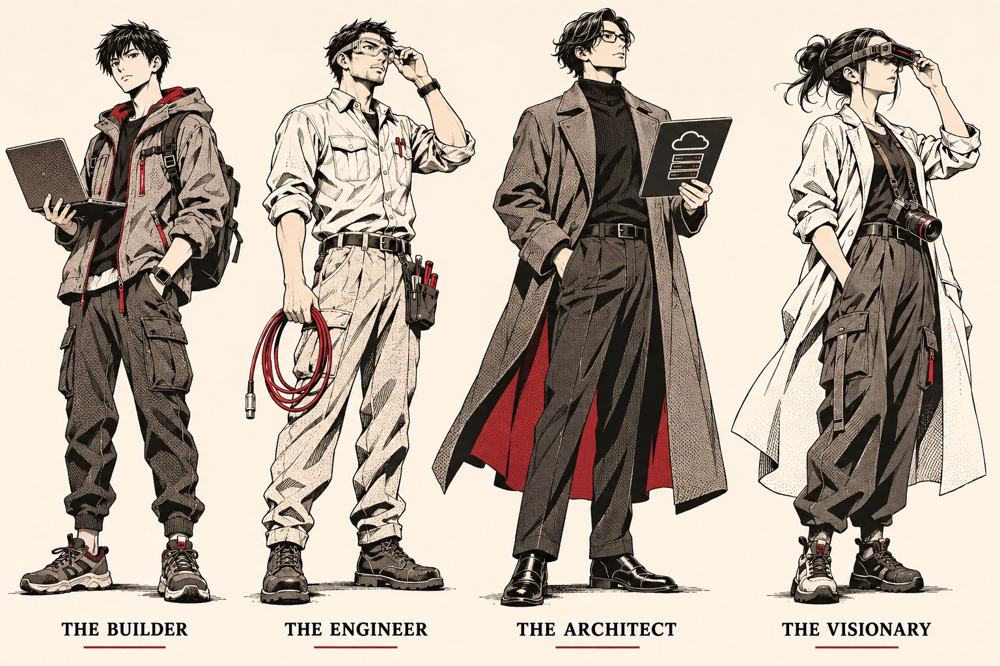
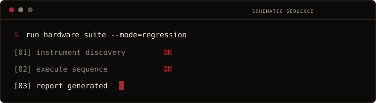
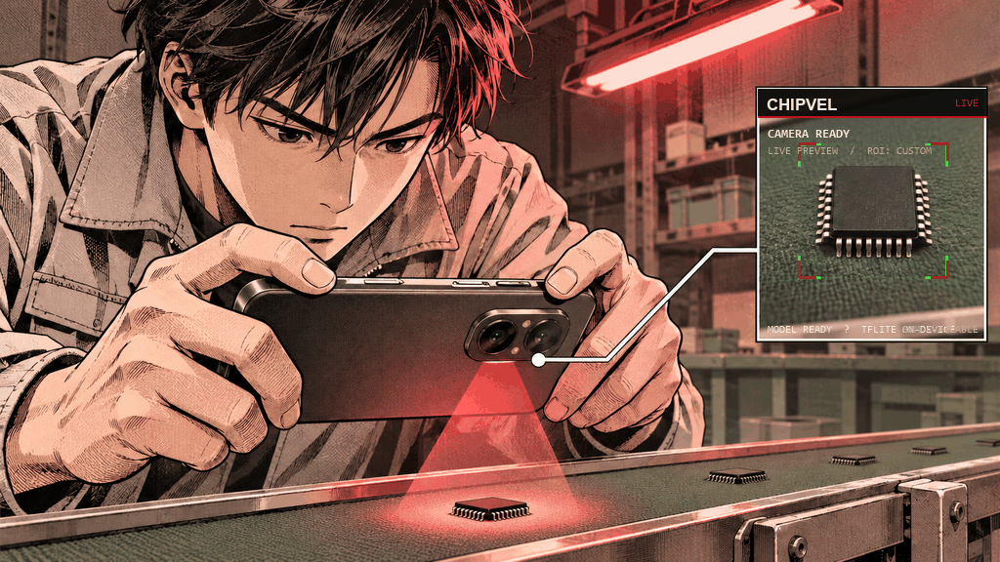
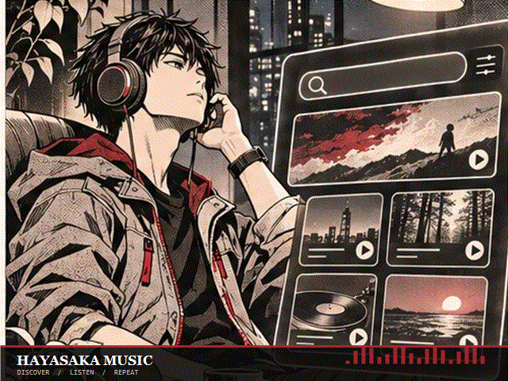
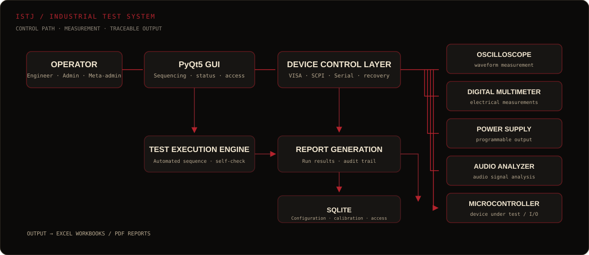
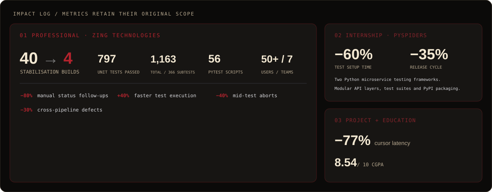

Languages
Python · JavaScript · TypeScript · Java · C/C++ · SQL

The Engineering Chronicles
A manga-inspired chronicle of real engineering work: automation, test systems, computer vision, and projects that inspire and connect.

I'm Koushik Ram, a Software Engineer at Zing Technologies in Bengaluru. I build intelligent software and automated systems, blending AI, Python, backend engineering and cloud technologies with a passion for thoughtful UI/UX design and polished frontend experiences.


Python · JavaScript · TypeScript · Java · C/C++ · SQL
PyQt5 · FastAPI · React · Next.js · Node.js
MySQL · MongoDB · SQLite · DynamoDB
AWS Lambda · GCP · Docker · Kubernetes · Jenkins · GitHub Actions
pytest · Selenium · Postman
OpenCV · MediaPipe
Ethereum · Solidity
Currently exploring: LLMs · RAG · LangChain · LangGraph · LangSmith · CrewAI · n8n · multi-agent systems · semantic search · embeddings · vector databases
Certifications: Microsoft Azure AI Essentials · Google Cloud Foundations & Generative AI · Databricks Fundamentals.

Mission 01 · Industrial hardware test automation
Python · PyQt5 · SQLite · VISA · SCPI · Serial
Built for structured testing on HAL’s ALH helicopter programme. A role-based desktop application coordinates lab instruments, runs automated sequences, checks equipment health and generates Excel/PDF reports.

Mission 02 · Automated chip inspection
Kotlin · Jetpack Compose · Material 3 · CameraX · TensorFlow Lite · Room · DataStore · Kotlin Coroutines
Android camera-based chip inspection for a conveyor workflow. The on-device TensorFlow Lite model detects chips and markings, applies inspection rules, and presents clear PASS or FAIL results.

Mission 03 · Computer vision / HCI
Python · OpenCV · MediaPipe · PyAutoGUI
Gaze-based cursor movement and hand gestures for clicks and scrolling. The project reports 77% lower cursor latency after retraining on a cleaner dataset.
EXPLORE SOURCE →
Mission 04 · Blockchain / full stack
Ethereum · Solidity · FastAPI · MySQL · JWT
Authenticated voter access and application data combined with on-chain vote recording through a Solidity smart contract and MetaMask.
EXPLORE SOURCE →Mission 05 · Web engineering
Next.js · JavaScript
Music search and streaming, playlists, favourites and automatic queueing of similar tracks.


At Zing Technologies, the ISTJ system joins a PyQt5 interface to instrument control and automated execution. Separately, a Python/MongoDB task platform on AWS Lambda serves 50+ users across 7 teams and reduced manual status follow-ups by 80%.



At Pyspiders, two Python microservice testing frameworks with modular API layers, test suites and PyPI packaging cut test setup time by 60%. Release cycles were 35% shorter. These internship outcomes are separate from the Zing Technologies results.
Bengaluru · Hardware test automation, backend/serverless systems and test engineering. ISTJ delivery and operator onboarding at HAL; mentored two interns.
Two Python microservice test frameworks with PyPI packaging; CI/CD with Jenkins, Docker, Kubernetes and GitHub Actions.
MVJ College of Engineering, Bengaluru · CGPA 8.54 / 10.
Deepening my exploration of Large Language Models (LLMs), Retrieval-Augmented Generation (RAG), and AI-powered application development.
Exploring semantic search, embedding models, vector databases, retrieval pipelines, and context-aware AI systems.
Building stronger foundations in DevOps, CI/CD, Docker, Kubernetes, cloud infrastructure, and automated deployment workflows.

Have an interesting opportunity, an engineering challenge, or an idea worth building? Let's start a conversation.